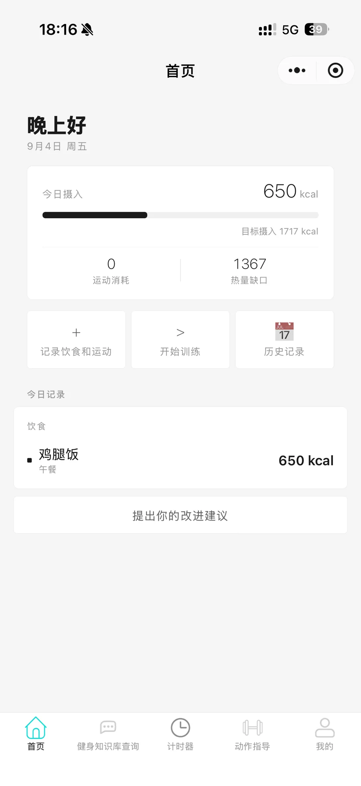
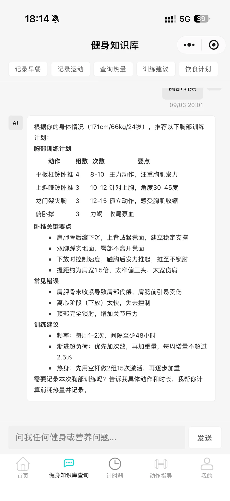
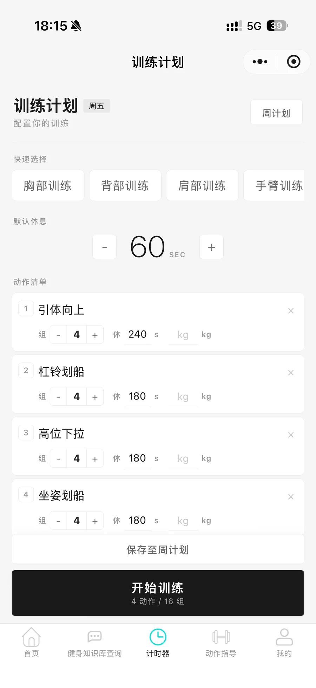
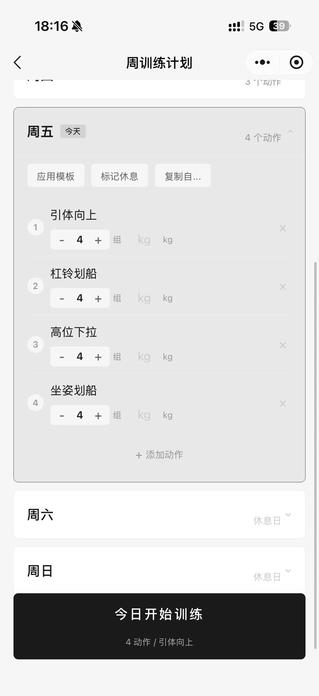
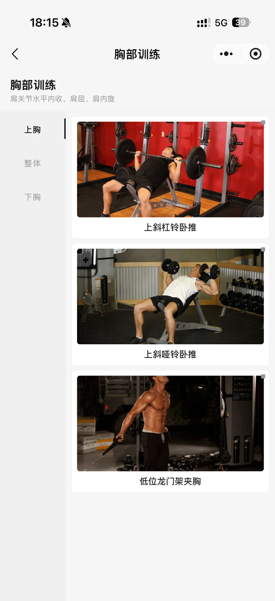
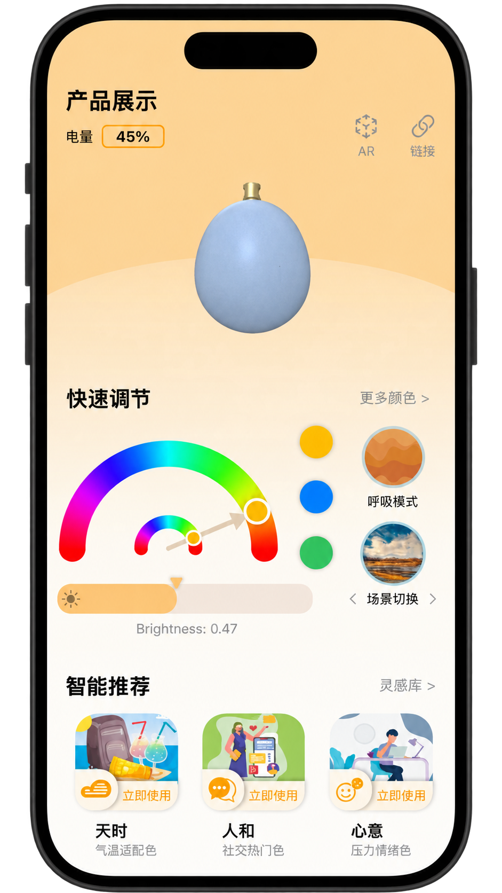
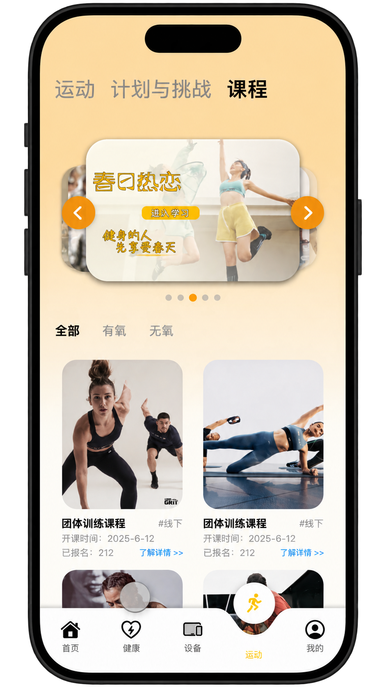
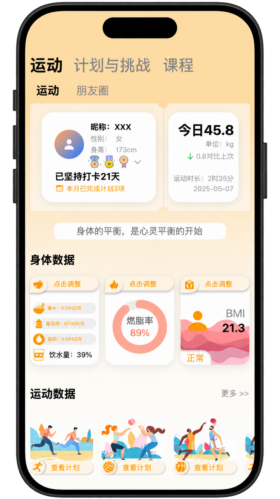
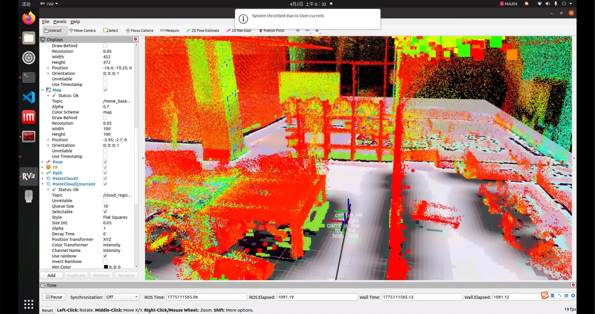
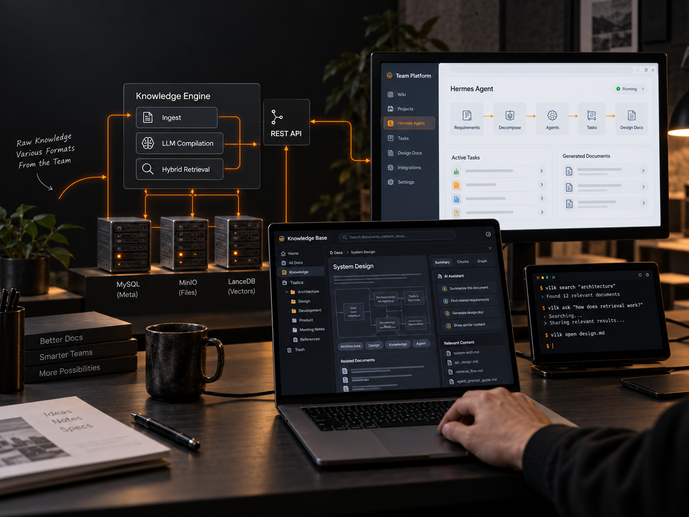

先看结果，再展开完整过程。
每个项目先保留核心价值与成果；完整背景、职责和技术方案可按需展开。
健身助手 Agent
将饮食、运动记录与个性化训练饮食计划整合为持续陪伴的健身助手。
出于个人兴趣爱好





面向需要长期训练与饮食管理的健身用户，我从需求拆解、交互流程、AI 工作流到前后端实现独立完成产品闭环。产品将“问答工具”升级为持续陪伴的健身助手：既能记录饮食和运动、展示热量与训练数据，也能结合用户身体状态生成个性化训练和饮食计划。
- 多智能体协作：基于 LangGraph 构建聊天、营养、健身与专家 4 类 Agent，由意图路由器动态分发任务；专家 Agent 负责二次评审，降低专业建议中的幻觉与安全风险。
- 检索质量提升：组合混合检索、多查询扩展与假设性文档嵌入，针对口语化健身问题补齐语义差异，使知识召回准确率提升约 20%。
- 长期个性化：设计三层记忆体系，将基础档案、阶段目标和交互偏好持续沉淀为用户画像，让后续回答与计划能够随训练过程动态调整。
- 产品落地：以 FastAPI 对接微信小程序，实现流式对话、运动饮食记录、训练计时、动作指导、周计划与历史数据可视化。
智能穿戴健康 iOS App
完成蓝牙接入、健康指标展示和设备控制的一体化 iOS 应用。
BLE / HEALTH DATA



围绕智能穿戴设备的真实使用链路，完成从蓝牙接入、健康指标展示到设备控制的 iOS 应用。项目既关注用户看到的健康数据与运动内容，也深入到底层通信协议和软硬件联调，让产品设计能够被稳定的工程能力支撑。
- 设备接入：使用 CoreBluetooth 完成 BLE 扫描、连接管理、协议解析与控制指令下发，处理设备状态与异常连接。
- 健康数据：实时展示心率、血氧、电量等数据，并以 Core Data 保存历史记录和趋势，为用户提供连续的健康反馈。
- 设备控制：支持 RGB 灯光、亮度和设备模式调节，打通“硬件采集—App 展示—反向控制”的完整链路。
- 界面工程：采用 SwiftUI、MVVM 组织页面与状态，覆盖设备、健康、运动课程、计划挑战等核心模块。
移动机器人底盘
在复杂室内场景中完成三维建图、定位、路径规划、避障与自主回充设计。
定位 ±3cm

基于 Jetson Orin NX 与 APM 搭建移动机器人底盘的自主导航能力，在约 500㎡复杂室内场景中完成三维建图、定位、路径规划和实时避障。项目不仅解决算法“能跑”的问题，也围绕业务状态流、低电量处置与自主回充完成可持续运行设计。
- 感知与导航：融合三维点云完成 SLAM 建图与定位，实现场景内自主规划和动态避障，定位精度达到 ±3cm。
- 任务编排：基于 py_trees 构建行为树，管理巡航、异常恢复、低电量返航和充电等完整业务状态。
- 可靠回充：通过视觉辅助对接优化末端定位，在目标场景中实现低电量自主回充，对接成功率 100%。
LLM-Wiki 团队知识服务
将分散原始文档编译为可检索、可治理且可被 Agent 直接调用的知识服务。
方案采纳率 80%

针对团队文档分散、格式不统一、检索困难和经验难以复用的问题，设计并落地面向 Agent 的知识编译服务。系统把原始文档转化为结构化 Markdown 知识单元，再通过统一检索、治理接口和可分发 Skill，让知识能够被人检索，也能被 Agent 在任务执行中直接调用。
- 知识编译：利用 LLM 将非结构化原始文档拆解为标准化 Markdown 单元，形成可持续维护的 Wiki 内容。
- 分层存储与检索：以 MySQL、MinIO、LanceDB 分别承载元数据、原始文件与向量索引，组合关键词和语义检索提升可用性。
- Agent 原生调用：封装独立可分发的 Wiki Skill 与 CLI，将任务管理、知识检索、经验积累和 Wiki 治理 REST API 暴露给 Agent。
- 方案生成：基于 Hermes Agent 异步执行，结合 Pydantic 结构化输出与分层提示词，将长需求文档拆成原子任务并生成标准化技术方案，初稿采纳率达到 80%。
长文档拆解、清洗并生成可治理的 Markdown 知识单元。
元数据、对象文件与向量索引分层存储，统一召回。
通过 Skill 与 CLI 把知识接入任务规划、方案生成和经验回流。